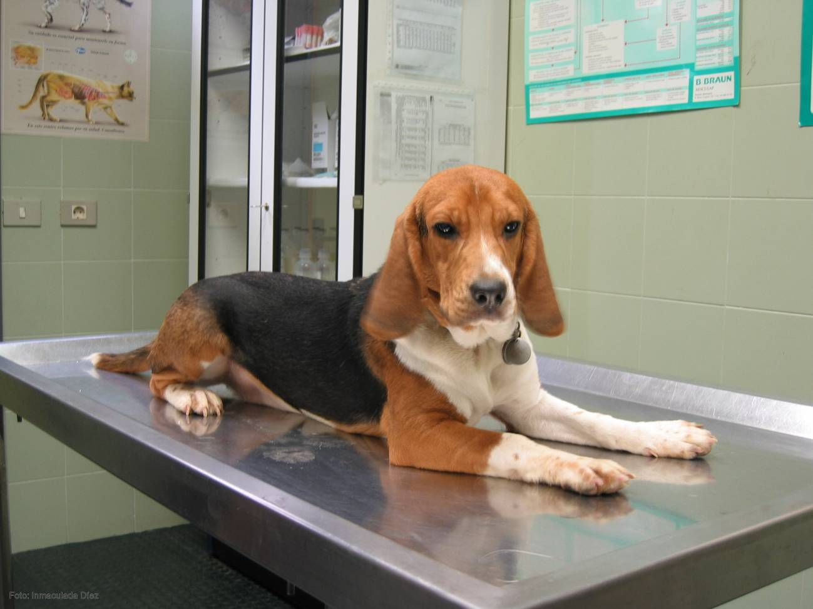
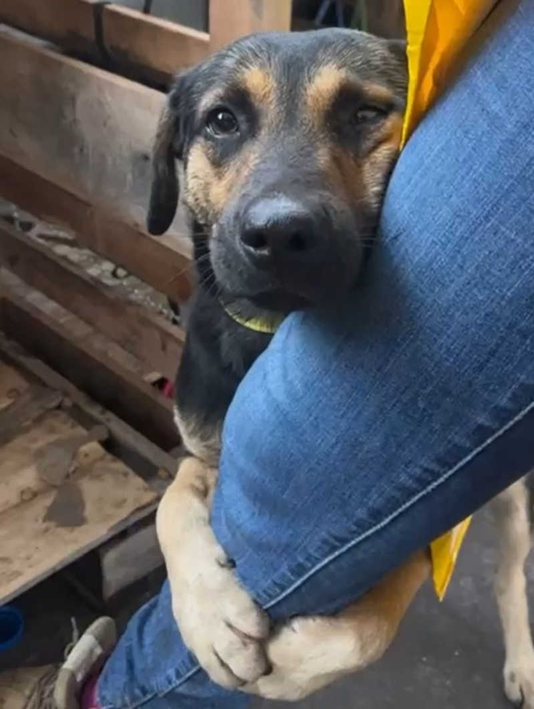
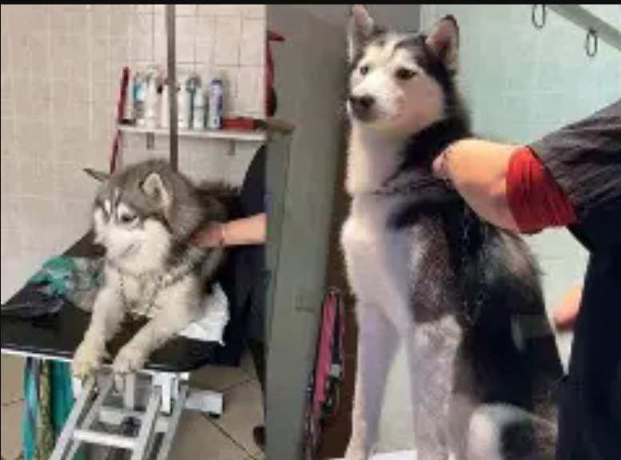

 Panchito el gordito "El servicio es increíble. Traje a Panchito para su revisión anual y lo trataron como a un rey. ¡Le encanta que le tomen fotos! Se nota que aman a los animales. ¡Súper recomendados!" ⭐⭐⭐⭐⭐ - 15 de febrero, 2026
 María García y "Luna" "Excelente atención en el área de urgencias. Estábamos muy asustados por Luna, la encontramos herida y no sabíamos qué hacer, pero los doctores fueron muy pacientes y profesionales en Uriangato. Ahora Luna está mucho mejor y nosotros muy agradecidos por el cuidado que le brindaron. ¡Gracias, Patitas Felices!" ⭐⭐⭐⭐⭐ - 10 de febrero, 2026
 Carlos Ruiz y "Rocky" "Llevé a Rocky a su primer baño y corte. Salió oliendo delicioso y muy tranquilo. El precio es muy justo para la calidad del servicio." ⭐⭐⭐⭐ - 2 de febrero, 2026